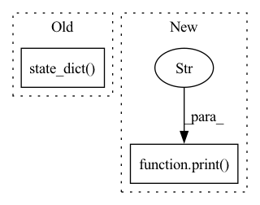

Pattern ID :8830
Before Change
assert loaded_model.lr_scheduler is None
return
saved = saved_model.lr_scheduler.state_dict()
loaded = loaded_model.lr_scheduler.state_dict()
assert sorted(saved.keys()) == sorted(loaded.keys())
for key in saved.keys():
if isinstance(saved[key], torch.Tensor):After Change
saved_sd = saved_scheduler.state_dict()
loaded_sd = loaded_scheduler.state_dict()
print(f"saved_sd = {saved_sd}" )
print(f"loaded_sd = {loaded_sd}")
assert saved_sd.keys() == loaded_sd.keys()
In pattern: SUPERPATTERN
Frequency: 6
Non-data size: 2
Instances Fragment ID: 32504398
Project Name: microsoft/deepspeed
Commit Name: f2ac7eafd54c49acb8981650637dedd939e96c14
Time: 2020-05-19
Author: jerasley@microsoft.com
File Name: tests/unit/test_checkpointing.py
M Class Name: AnonimousClass
N Class Name: AnonimousClass
M Method Name: compare_lr_scheduler_states(2)
N Method Name: compare_lr_scheduler_states(2)
M Parent Class:
N Parent Class:
M File Name: tests/unit/test_checkpointing.py
N File Name: tests/unit/test_checkpointing.py
M Start Line: 26
M End Line: 39
N Start Line: 66
N End Line: 87
Before Change
def load_tgz(model, weight):
for key, value in model.state_dict() .items():
print(key, value.shape)
assert False
After Change
bc_name = name
for pattern, sub in name_convertor:
name = re.sub(pattern, sub, name)
print( bc_name, "->" , name)
print(param.shape)
param.data.copy_(npz_dim_convertor(name, weight.get(name)))
assert False Fragment ID: 32504397
Project Name: hankyul2/efficientnetv2-pytorch
Commit Name: e07d26d87af78820bbc1759857b72f583ce0f1cd
Time: 2021-11-12
Author: consistant1y@ajou.ac.kr
File Name: src/pretrained_weight_loader.py
M Class Name: AnonimousClass
N Class Name: AnonimousClass
M Method Name: load_tgz(2)
N Method Name: load_tgz(2)
M Parent Class:
N Parent Class:
M File Name: src/pretrained_weight_loader.py
N File Name: src/pretrained_weight_loader.py
M Start Line: 30
M End Line: 31
N Start Line: 48
N End Line: 115
Before Change
accs = model_max.finetunning(x_spt, y_spt, x_qry, y_qry, c_spt, c_qry, n_spt, n_qry, g_spt, g_qry, feat)
accs_all_test.append(accs)
torch.save(model_max.state_dict() , "./model.pt")
accs = np.array(accs_all_test).mean(axis=0).astype(np.float16)
print("Early Stopped Test acc:", accs[-1])After Change
accs_all_test.append(accs)
accs = np.array(accs_all_test).mean(axis=0).astype(np.float16)
print( "Epoch:", epoch + 1, " Val acc:" , str(accs[-1])[:5])
if accs[-1] > max_acc:
max_acc = accs[-1]
model_max = copy.deepcopy(maml)
Fragment ID: 32504393
Project Name: mims-harvard/g-meta
Commit Name: edbc5799976b391ada110fedab31bca222247449
Time: 2020-10-18
Author: kh2383@nyu.edu
File Name: G-Meta/train.py
M Class Name: AnonimousClass
N Class Name: AnonimousClass
M Method Name: main(0)
N Method Name: main(0)
M Parent Class:
N Parent Class:
M File Name: G-Meta/train.py
N File Name: G-Meta/train.py
M Start Line: 87
M End Line: 149
N Start Line: 92
N End Line: 148
Before Change
torch.save(net, checkpoint_fname)
logging.info(f"Checkpoint {epoch + 1} saved !")
net.load_state_dict(net.state_dict() )
net.eval()
return net
After Change
val_loader = torch.utils.data.DataLoader(val_dataset, batch_size=batch_size, shuffle=False, num_workers=0)
net = net.to(device=device)
if torch.cuda.device_count() > 1:
print("Let"s use" , torch.cuda.device_count(), "GPUs!")
// dim = 0 [30, xxx] -> [10, ...], [10, ...], [10, ...] on 3 GPUs
net = DataParallelPassthrough(net, device_ids=config["device_ids"])
net=net.to(device=device) Fragment ID: 32504391
Project Name: aangelopoulos/im2im-uq
Commit Name: 4f4c3450295e67f2d2c5b91db7bd5bde5ca5c6c8
Time: 2021-06-24
Author: angelopoulos@n0024.abc0
File Name: core/scripts/train.py
M Class Name: AnonimousClass
N Class Name: AnonimousClass
M Method Name: train_net(12)
N Method Name: train_net(13)
M Parent Class:
N Parent Class:
M File Name: core/scripts/train.py
N File Name: core/scripts/train.py
M Start Line: 147
M End Line: 260
N Start Line: 70
N End Line: 175
Before Change
return
torch.save({
"model_state_dict": model.state_dict(),
"optimizer_state_dict": optimizer.state_dict()
}, "../Model/" + save_path)
print("Model saved to ==> {../Model/save_path}")
def load(name, model, optimizer):After Change
}
save_path = "../Model/" + save_path
torch.save(checkpoint, save_path)
print(f"Model saved to ==> {save_path}" )
def load(name, model, optimizer):
checkpoint = torch.load("../Model/" + name)
model.load_state_dict(checkpoint["model_state_dict"]) Fragment ID: 32504389
Project Name: samyuen101234/masked_face_recognition
Commit Name: 6b21ac9f73b84c637155cb1d3c6b4ced167ca373
Time: 2021-05-05
Author: yxiear@connect.ust.hk
File Name: Code/train.py
M Class Name: AnonimousClass
N Class Name: AnonimousClass
M Method Name: save(4)
N Method Name: save(3)
M Parent Class:
N Parent Class:
M File Name: Code/train.py
N File Name: Code/train.py
M Start Line: 12
M End Line: 16
N Start Line: 18
N End Line: 28
Before Change
kk: (np.cumproduct(vv.shape)[-1] if len(vv.shape) != 0 else 1) for kk, vv in torch_model.state_dict().items() if ".num_batches_tracked" not in kk
}
print(">>>> torch_model total_parameters :", np.sum(list(torch_params.values())))
stacked_state_dict = state_dict_stack_by_layer(torch_model.state_dict() , skip_weights=skip_weights, unstack_weights=unstack_weights)
aa = {kk: [1 if isinstance(jj, float) else jj.shape for jj in vv] for kk, vv in stacked_state_dict.items()}
print(">>>> Torch weights:")
_ = [print(" "{}": {}".format(kk, vv)) for kk, vv in aa.items()]After Change
from skimage.data import chelsea
if isinstance(torch_model, str):
print(">>>> Reload Torch weight file:" , torch_model)
torch_model = torch.load(torch_model, map_location=torch.device("cpu"))
is_state_dict = isinstance(torch_model, dict)
Chelsea the cat Fragment ID: 32504386
Project Name: leondgarse/keras_cv_attention_models
Commit Name: 595d36b2f10fd36ac66a39f902327e803dcddcc7
Time: 2021-10-31
Author: leondgarse@gmail.com
File Name: keras_cv_attention_models/download_and_load.py
M Class Name: AnonimousClass
N Class Name: AnonimousClass
M Method Name: keras_reload_from_torch_model(11)
N Method Name: keras_reload_from_torch_model(11)
M Parent Class:
N Parent Class:
M File Name: keras_cv_attention_models/download_and_load.py
N File Name: keras_cv_attention_models/download_and_load.py
M Start Line: 150
M End Line: 199
N Start Line: 151
N End Line: 216